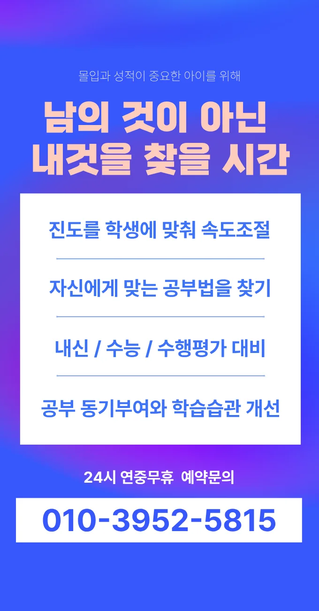
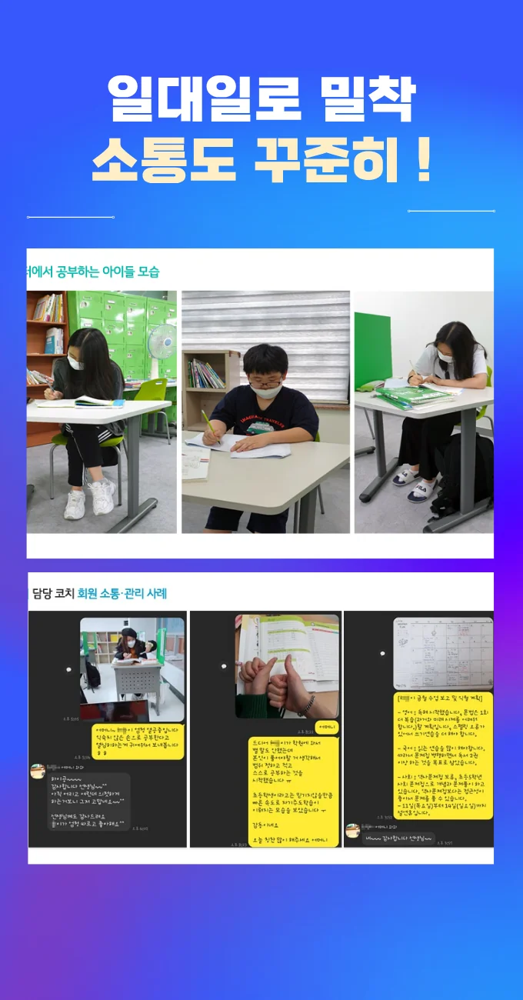

첫 번째 단계는 주변 환경을 살피는 거예요. 집과 가까운 거리라면 이동 시간 절감 효과가 크고, 부모님의 출퇴근 길과도 맞물리니 편리함을 느낄 수 있어요. 두 번째로는 교육 프로그램의 구성 방식을 확인해요. 체계적인 진단 후 맞춤형 수업을 제공하는 곳이면 목표 달성 확률이 높아지거든요. 세 번째는 강사의 전문성을 검증하는 과정이에요. 강사의 학력과 현장 경험을 직접 물어보고, 실제 수업 영상을 참고하면 신뢰도가 올라갑니다. 마지막으로는 비용 대비 효과를 계산해 보는 것이 중요해요. 월별 지출을 예상하고, 장기적인 성과를 비교하면 현명한 선택이 가능하답니다. 또 또한, 주변 학부모들의 입소문을 수집하면 실제 만족도를 가늠할 수 있어요.
주거가 조용하고 학군이 우수한 지역이라 초등 저학년은 기초 개념 형성에 집중하는 경향이 강해요. 초등 고학년은 자기주도 학습 능력이 급격히 성장하면서 과목별 심화 학습을 원해요. 중학생은 입시와 실전 문제 해결 능력 사이에서 균형을 잡으려는 모습을 보이며, 과목 간 연계성을 탐구하는 경우가 많아요. 고등학생은 대학 진학 목표에 따라 전공 선택과 심화 과목에 집중하는데, 특히 과학수학 분야에서 실험연구 경험을 중요시해요. 전체 학년은 울산삼산 초등 수학학원 선택 시 학부모와 학생이 함께 목표를 설정하고, 지속적인 피드백을 받을 수 있는 환경을 선호한다는 점을 기억해 두세요.
와와학습코칭센터는 수업 도중 아이들에게 본문 내용을 요약해서 발표하도록 유도하는 독특한 방식을 써요. 주로 시험을 앞둔 학생들이 집중력을 높이고 싶어 할 때 추천할 수 있는 곳이죠. 긴장감을 덜어주고 유연하게 수업이 진행되니까요. 수업은 주로 일주일에 두 번, 각각 백이십 분씩 이루어져서 시험 대비반으로 아주 효과적이에요. 수강료는 초등 영어 에이가 이십이만 원, 영어 비이가 이십칠만 원으로 책정되어 있어서 부담 없이 시작할 수 있답니다. 이곳은 단순히 지식을 주입하는 곳이 아니라 아이가 스스로 생각하는 힘을 길러주는 공간이에요. 학생들이 수업 시간에 지루해하지 않도록 다양한 자료를 활용해서 흥미를 유발하거든요. 실제로 많은 학생들이 이곳에서 공부하는 즐거움을 알게 되고 성적도 함께 올리는 경험을 하고 있어요.
| 학원명 | 와와학습코칭학원 |
| 수강료 | 초등영어A 220,000원 | 초등영어B 270,000원 |
CURRICULUM
커리큘럼은 이해 부족 파트를 집중 보완하는 구조로 설계돼 있어요. 중학교 3학년 학생을 대상으로 차분히 진행하지만 발표 시 시선을 피하는 경향을 보완하기 위해 소그룹 토론을 도입했어요. 매주 목표 설정과 회고 시간을 통해 스스로 학습 계획을 점검하도록 유도하고, 피드백은 구체적인 행동 지침 형태로 제공돼요. 또한 교과서와 연계된 실전 문제를 매일 10문제씩 풀게 함으로써 실전 감각을 유지하게 해요.
학생들이 공부를 하면서 흔히 저지르는 실수들이 있는데, 사회 과목을 예로 들면 육십구 점이었던 점수가 구십일 점으로 오르는 사례도 많아요. 이는 논점을 중심으로 정리하는 효과를 보았기 때문인데, 무작정 외우는 것보다는 핵심을 파악하는 것이 중요하거든요. 또한 목표별로 예상 성취 기간을 스스로 설정할 수 있도록 돕는 과정이 필요해요. 울산삼산 아이들이 목표를 세놓고 그것을 이루는 과정을 스스로 관리하는 훈련이 되어야 하니까요.
학생별 접근 방식을 설계해 과제를 재구성하고 실행 방향을 명확히 해요. 반복 없이 핵심 개념을 오래 기억하도록 구조화했으며, 단계별 확인 루틴을 통해 학습 진행 상황을 점검해요. 학교와 연계된 골목 구간을 활용해 실생활 적용 능력을 강화하는 것이 특징이에요.
고등학교 2학년으로 과제는 충실히 수행하지만 자기 관리가 부족한 학생에게 특히 적합해요. 공부 방향은 잡혀 있지만 실행이 어려운 경우, 목표를 작은 단위로 나누고 구체적인 실행 계획을 세우는 것이 도움이 돼요. 스스로 일정을 관리하고 피드백을 적극 활용하면 학습 효율이 크게 향상돼요. 또한 자기 주도 학습에 흥미를 느끼는 학생은 다양한 학습 도구와 자료를 활용해 스스로 학습을 설계할 수 있어요. 이러한 유형의 학생들은 맞춤형 코칭을 통해 성장 가능성을 극대화할 수 있어요.
울산삼산에 사는 한 어머니는 처음 방문했을 때 강사들의 친절함에 감동했어요. 아이가 처음엔 어색해했지만, 점차 수업 분위기에 익숙해지면서 스스로 목표를 세우기 시작했어요. 또 다른 학부모는 매주 진행되는 성취 기록이 아이에게 큰 동기 부여가 된다고 말했어요. 한 학생은 선생님이 시험 문제를 세밀히 분석해 주는 덕분에 실전 감각이 살아났다고 전했어요. 마지막으로, 지속적인 태도 점검 덕분에 학습 습관이 꾸준히 유지되고 있다는 만족감을 표현했어요.